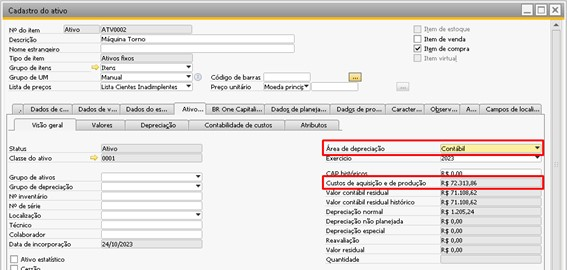
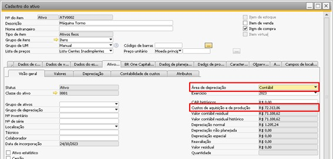
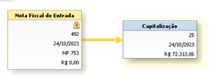
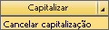

Capitalização de item não estocável
Capitalização de item importado.
Com o item não estocável já importado, ele será vinculado a um ativo fixo já cadastrado por meio da aba BR One Capitalização.

Ao localizar o item importado e selecioná-lo no ativo fixo por meio da aba BR One capitalização os valores utilizados na nacionalização(imposto e despesas) aparecerão em tela para que o usuário selecione quais custos serão agregados ao custo de aquisição do ativo.
Note que a apresentação dos valores ocorre separadamente por área de depreciação.
Caso o usuário já tenha adicionado as despesas de importação estes valores também aparecerão para serem selecionados.

Como no SAP para capitalizar um ativo e acrescentar valores nas áreas de depreciação é necessário entrar com este ativo por meio de uma nota fiscal de entrada, o BR One capitalização também irá gerar uma Nota de entrada contendo:
Valores selecionados na área de depreciação principal serão levados para o campo Preço unitário da Nota de Entrada e posteriormente preencherá o campo Custo de aquisição e de produção da área de depreciação principal.
 

Valor selecionado na área de depreciação que faz controle de crédito preencherá na Nota de Entrada o imposto correspondente, e após a nota adicionada preencherá o campo Custo de aquisição e de produção da área de depreciação do imposto.
Como inicialmente o add-on gera um esboço de Nota Fiscal de Entrada o usuário pode validar os valores antes de adicionar a nota. Caso precise pode cancelar o esboço, ajustar os valores selecionados gerar um novo imposto.
Após adicionar o documento, tanto a Nota Fiscal de Entrada quanto o documento de Capitalização ficam vinculados no cadastro do ativo nos campos correspondentes dentro da aba BR One Capitalização.

Caso seja necessário cancelar a Nota Fiscal de Entrada mesmo depois de adicionada também é possível pelo botão Cancelar Capitalização no rodapé da aba BR One Capitalização.
Obs. Este documento adicionado pelo BR One terá o mesmo fornecedor e datas da nota de nacionalização onde ocorreu a importação do item não estocável vinculado ao ativo.
Como este documento gerado terá o campo Gratuito (parceiro de negócios) selecionado, fique tranquilo pois não será duplicado o faturamento para o fornecedor. Fiscalmente esta nota também não estará duplicada pois ela terá as configurações abaixo:
Nº NF: Manual
Série: Mesma série utilizada na nota de nacionalização
Modelo: Nada.